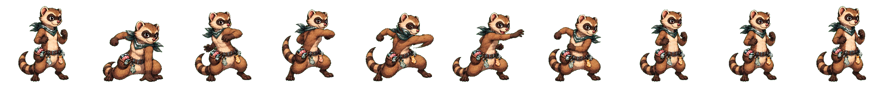

Accepted candidate 01. This row-generation pass is source-only, no-size-drift, and not playable.

assets/source/imagegen/fighters/ferret-noodle/special.png is exact 2560x256 with alpha.
public/assets/generated/fighters/ferret-noodle remains absent, so Noodle Nibbles remains not playable.
Candidate 01 was accepted after chroma cleanup, vertical crop, and normalizer verification. Candidate slots 02 and 03 were not needed.